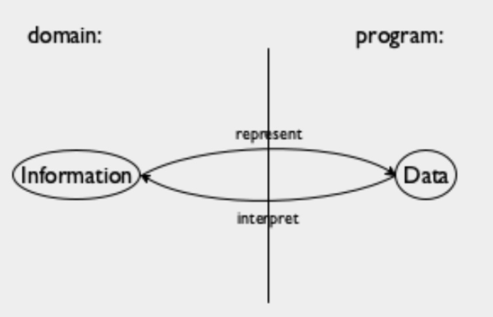

What are the design recipes in the book How to Design
Programs?
All the design recipes are based on the basic steps
of a function design recipe as seen in the Preface of the book.
Function Design Recipe
1.
From
Problem Analysis to Data Definitions: Identify the information that must be represented and how it is
represented in the chosen programming language. Formulate data definitions and
illustrate them with examples.
2.
Signature,
Purpose Statement, Header: State
what kind of data the desired function consumes and produces. Formulate a
concise answer to the question what the function computes.
Define a stub that lives up to the signature.
3.
Functional
Examples: Work through examples that
illustrate the function’s purpose.
4.
Function
Template: Translate the data definitions
into an outline of the function.
5.
Function
Definition: Fill in the gaps in the
function template. Exploit the purpose statement and the examples.
6.
Testing: Articulate the examples as tests and ensure that
the function passes all. Doing so discovers mistakes.
The design recipe essentially provides scaffolding
until the one creative step: the function definition. Throughout the process,
examples play a central role, but most importantly, each step has questions and
an intermediate product which means progress can be made independently.
There are many sub-sections of the book whose title
has “Design” in them, each provides a more specific design recipe that the one
above. Here is a list:
Information and Data

Part of the real world where the information comes
from is called the domain. This info is turned into data for the program to
process. Once that is done the data is turned back into information. The
model-view controller pattern is used to separate the processing step from the
info->data and data->info translation steps. We can represent Information
as Data and interpret Data as information in using a Data Definition which
includes
·
Name of a collection of data -
a class of data
·
And shows
o How to create elements of this class of data
o How to decide whether some arbitrary piece of data
belongs to this class
Designing Functions
1.
Express how you wish to
represent information as data
2.
Write down a signature, a
statement of purpose, and a function header.
a.
Signature: write down the
class(es) to which the input(s) belong, followed by an arrow, and then the
class to which the output belongs.
b.
Purpose statement: the shortest
possible answer to what does this function compute?
c.
Header (or a stub): write the
function, except, just put any piece of data that belongs to the output class
in the body of the function.
3.
Add some functional examples
between the purpose statement and the header. Choose examples from each input class, and consider all possible inputs.
4.
Take inventory by replacing the
function’s body with a template, this reminds us of what things we have when
making the body of the functions.
5.
Code, i.e.
replace the body of the function with an actual expression that does what the
purpose statement and examples promise.
6.
Test the function on the
examples that you worked out before. If the results don’t match, the following
might be possible:
a.
The expected output you
calculated is wrong
b.
The function definition computes
the wrong result (bug)
c.
Both a) and b) apply. If so,
start by checking the validity of a) first.
Designing World Programs
1.
Introduce constants of
properties that don’t change over time
a.
Physical constants describe
general attributes about the world, like height, width, color
b.
Graphical constants are images
of objects in the world
2.
Introduce a “world state” for
properties that change over time. This is in the form of a data definition that
should cover all possible states of the world
3.
Add the “handlers wish list”
with purpose statements, etc tailored to your world.
a.
render to map each possible
state of the world to an image
b.
clock-tick-handler,
keystroke-handler, mouse-event-handler to change the world depending on time or
user-input
c.
end? for stopping the program
4.
The main function, doesn’t demand testing or design. It’s to launch the big-bang
by passing an initial world state to it.
Designing with Itemizations
Design of functions can—and must—exploit the
organization of the data definition.
1.
Data definition should
distinguish different sub-classes of data, each subclass should be distinct
(disjoint) from every other sub-class.
2.
Signature, purpose statement,
function header will be the same as before
3.
For functional examples, pick at
least one from the interior of each sub-class, and, for finite-range classes,
pick examples from the boundaries too. Turn them into test cases (sometimes it
is better to write how to compute the result rather than write the final result)
4.
New: the template
mirrors the organization of sub-classes with a cond. Each condition
should uniquely identify its corresponding sub-class.
5.
Write the result for each
clause. Use the tests as a guide and only think about the clause you’re on.
6.
Make sure that the tests cover
all conditional clauses.
Designing with Structures
1.
You need a structure type
definition when pieces of information come together to describe a natural
while. An instance of this structure type corresponds to the whole, and the
fields correspond to its attributes.
Show how this structure type may be constructed by showing what data collection
each field belongs to. Add examples of structure instances.
2.
Signature, purpose statement,
function header.
3.
Use examples from step 1 to
create functional examples. Choose multiple examples if a field has a range.
4.
In the template, extract the
values of each field of the structure using selectors. This is to remind you
that you can use them. You may also write down the data type next to each
selector expression.
5.
Define the function. You may not
need all the selector expressions.
6.
Test.
Designing with Itemizations, Again
1.
Itemizations are needed due to
distinctions among different classes while structure-based data definition is
due to the need to group pieces of information.
Itemization may include different kinds of information and each piece of
information may consist of several other pieces, or it may alias a separate
data definition.
2.
Signature, purpose statement and
header.
3.
Formulate illustrative
functional examples that cover all sub-classes in the itemization
4.
The body has a condition that
has clauses identifying each sub-class of the itemization. for the right hand side of the clause, if it is a structure, write
its selector expressions, if it’s another data definition, create a separate
template to deal with it.
Before jumping into the template, see if the problem statement requires
composition of many such functions, if so, skip the template step.
5.
Fill in the gaps in the
template. Fill out the easy cases first, and use the
default value for other. Consider how to combine the pieces (and some
constants) in the more complex clauses. For aliased data definition, add calls
to its template.
6.
Test, and fix the function
and/or the tests if the tests fail.
Designing with Self-Referential Data Definitions
1.
A self referential data definition is valid when at
least one clause is not self-referential. It is good to annotate these
references with arrows. Check the validity of the data definition by generating
examples (if that is not possible, the definition may be invalid)
2.
Signature, purpose statement and
header. Focus on what the function computes not how.
Especially not how the function goes through instances of the given data.
3.
Come up with functional
examples, make sure to also generate using the self-referential clause of the
data definition.
4.
The template looks like the one
that deals with itemizations and structures. Formulate as many conditional
clauses as there are clauses in the data definition. Write down the appropriate
selector expressions in the clauses that process compound values.
Use the following question-answer-game to translate a data definition into a
template. The purpose is to express the data definition as a function layout.
The template should match the data definition in all aspects, de-structuring of
structures, references and self-references (i.e.
arrows should match), and the number of conditional clauses.
a.
Question: Does the data
definition distinguish among different sub-classes of data?
Answer: Your template needs as many conditional clauses as sub-classes that the
data definition distinguishes
b.
Question: How do the sub-classes
differ from each other?
Answer: Use the differences to formulate a condition per clause.
c.
Question: Do any of the clauses
deal with structured values?
Answer: If so, add appropriate selector expressions to the clause
d.
Question: Does the data
definition use self-references?
Answer: Formulate “natural recursions” for the template to represent the
self-references of the data definition.
e.
Question: If the data definition
refers to some other data definition, where is this cross-reference to another
data definition?
Answer: Specialize the template for the other data definition. Refer to this
template.
5.
Start with the base
cases (the lines without the recursive calls), the answers are usually
easy to formulate (by looking at examples). For the recursive cases, assume
that the function already works as specified in the purpose statement (leap of
faith). The rest is then a matter of combining the various values.
Use the following question-answer-game to turn the template into a function
definition.
a.
Question: What are the answers
for the non-recursive conditional clauses?
Answer: The examples should tell you which values you need here. If not,
formulate appropriate examples and tests.
b.
Question: What do the selector
expressions in the recursive clauses compute?
Answer: The data definitions tell you what kind of data these expressions
extract, and the interpretations of the data definitions tell you what this
data represents.
c.
Question: What do the natural
recursions compute?
Answer: Use the purpose statement of the function to determine what the value
of the recursion means, not how it computes this answer. If the purpose
statement doesn’t tell you the answer, improve the purpose statement.
d.
Question: How can the function
combine these values to get the desired answer?
Answer: Find a library function that combines the values. Or, if that doesn’t
work, make a wish for a helper function.
6.
Turn all examples into test,
make sure they pass and cover all cases.
Note that in step 5, you can use the table method
if the combinator in not clear. Follow the following guidelines:
1.
Question: If you are stuck...
Answer: Arrange the examples from the third step in a table. Place the given
input in the first column and the desired output in the last column. In the
intermediate columns enter the values of the selector expressions and the
natural recursion(s). Add examples until you see a pattern emerge that suggests
a combinator.
2.
Question: If the template refers
to some other template, what does the auxiliary function compute?
Answer: Consult the other function’s purpose statement and examples to
determine what it computes, and assume you may use the
result even if you haven’t finished the design of this helper function.
Too long, didn’t read? Here is a summary for
designing a function for self-referential data.
1.
Problem analysis - data
definition - Develop a data representation for the information; create examples
for specific items of information and interpret. data as information; identify
self-references.
2.
Header - signature, purpose,
dummy definition - Write down a signature using defined names; formulate a
concise purpose statement; create a dummy function that produces a constant
value from the specified range.
3.
Examples - examples and tests -
Work through several examples, at least one per clause in the data definition.
4.
Template - function template -
Translate the data definition into a template: one conditional clause per data
clause; selectors where the condition identifies a structure; one natural
recursion per self-reference.
5.
Definition - full-fledged
definition - Find a function that combines the values of the expressions in the
conditional clauses onto the expected answer.
6.
Test - validated tests - Turn
them into tests and run them
Design by Composition
In general these rough
guidelines are presented for when to make auxiliary functions:
1.
Design one function per task.
Formulate auxiliary function definitions for every dependency between
quantities in the problem.
2.
Design one template per data
definition. Formulate auxiliary function definitions when one data definition
points to a second data definition.
There are several situations that indicate a need
for auxiliary functions
1.
Composition of values requires
knowledge of a particular domain of application
2.
Composition of values requires
case analysis of available values, an auxiliary function with a conditional
will be required
3.
If the composition of values
must process an element from a self-referential data definition
4.
If everything fails, you may
need to design a more general function and define the main function as a
specific use of the general function.
The key to managing the design of programs is to
maintain a Wish List. This is a list of function headers.
Designing Abstractions
1.
Compare two items for
similarities. When you find two function definitions that are almost the same
except for their names and some values at analogous places,
compare them and mark the differences.
2.
Abstract. To abstract means
to replace the contents of corresponding code highlights with new names and add
these names to the parameter list.
3.
Validate. Define the two
original functions in terms of the abstraction. Make sure the tests succeed.
4.
A new abstraction needs a
signature. Here are the steps to abstract signatures (they are similar to abstracting functions):
a.
Compare the signatures of the
two functions for similarities and differences.
b.
Replace the differences with
variables that range over classes of data. Once the two signatures are the
same, you have a signature for the abstracted function.
c.
Test the abstract signature.
First, ensure that suitable substitutions of the variables in the abstract
signature yield the signatures of the two functions. Check that the generalized
signature is in sync with the code.
Designing with Abstractions
1.
Follow the design recipe for
functions for three steps.
2.
We exploit the signature and the
purpose statement to find a matching abstraction. The purpose of the
abstraction will be more general. For the type variables in the signature, you
should be able to consistently substitute data collection that you want.
3.
Write down a template. The
template uses a local definition. Within the local definition, add the helper’s
signature, purpose statement and header and call this using the abstraction
from the body of the local definition.
4.
Finally define the auxiliary
function inside the local definition. This follows the design of simple
functions. The only difference is that parameters of surrounding function can
be included in the inventory.
5.
Test. Confirm their working at a
more general level by using the abstract example of their purpose statement.
Designing with Intertwined Data
1.
The need mutually related data
definitions is similar to the one for the need for
self-referential data definitions. You may have to deal with many distinct
kinds of information, and one form of information refers to other kinds. Draw
arrows to connect references to definitions. You must be able to construct some
examples for every individual definition.
2.
Design as many functions in
parallel as there are data definitions. Write a signature, a purpose statement,
and a dummy definition for each function.
3.
Work through functional examples
that use all mutual references in the nest of data definitions.
4.
Design the template according to
its primary data definition. Follow the question-answers for the translation of
data definition to template in the self-referential design recipe, except check
for all self-references and cross-references. All arrows in the data
definitions should be replaced with function calls.
5.
Start with those conditional
clauses that do not contain natural recursions or calls to other functions. Let
the examples and the guidelines for turning a template to a function definition
from the design recipe from self-referential data help you. Use the table
method if you're stuck here.
6.
Run the tests. You may get two
errors if an auxiliary function is broken (one from the main and another from
the flawed auxiliary function). Make sure to cover all the pieces of the
function.
Designing Functions that Consume Two Complex Inputs
Follow the general design recipe up to the
signature, purpose statement and stub. Follow either of these three options
1.
If one parameter plays a
dominant role, think of the other as an atomic piece of data
2.
If two parameters equal status
and purpose suggests that they are processed in a synchronized manner, choose
one parameter and organize the function around it, and traverse the other one
in parallel.
3.
If there is no connection
between the two parameters, analyze all possible cases with examples.
Make a table, on the horizontal direction direction,
enumerate the conditions that recognize the sub-classes for the first
parameter, and along the vertical direction, we enumerate the conditions for
the second parameter.
Add at least one example per cell and one conditional clause per cell in the
table (which combines the horizontal and vertical conditions). Keep in mind the
natural recursions (which may be possible in all clauses).
Designing Algorithms
1.
Choice of data representation
affects our thinking about the computational process. Be prepared to explore
different data representations.
2.
We also need a signature, a
function header, and a purpose statement. The purpose statement should also
explain how the function computes the result, not just what the function
computes.
3.
Function examples are to explain
the underlying idea.
4.
A general template for
algorithms, splits the algorithm distinguishes two kinds of problems: those
that are trivially solvable and those that are not. We
recognize these cases, and for the trivially solvable problem it is easy to
determine the solution, for the non-trivial problem, we should generate
sub-problems, solve them recursively and then combine the solutions.
5.
The template is only a
suggestive blueprint. The template reminds us of four questions. We express
solutions to them as functions/expressions. For this the table
based method for the design recipe for self-referential data might help.
a.
What is a trivially solvable
problem?
b.
How are trivial solutions
solved?
c.
How does the algorithm generate
new problems that are more easily solvable than the original one? Is there one
new problem that we generate or are there several?
d.
Is the solution of the given
problem the same as the solution of (one of) the new problems? Or, do we need to combine the solutions to create a solution
for the original problem? And, if so, do we need anything from the original
problem data?
6.
Test and eliminate bugs.
7.
The termination argument:
a.
Show why each recursive call
works on a problem that is smaller than the given one, or
b.
You may not be able to make a
size argument, show the class of data for which the function loops forever. (In
rare cases both a) and b) are not possible)
Designing Accumulator-Style Functions
The design for accumulator function has two major aspects
1.
The recognition that a function
benefits from an accumulator
a.
If a structurally recursive
function traverses the result of its natural recursion with an auxiliary, recursive
function, consider the use of an accumulator parameter.
b.
For functions based on
generative recursion, adding a parameter that accumulates knowledge may help.
2.
An understanding of what the
accumulator represents.
In general the process is
as follows
1.
Create an accumulator template
with an accumulator function within a local definition that is called with an
initial accumulator.
2.
Determine the kind of data that
the accumulator tracks. Write down a statement that explains the relationship
between the parameter of the accumulator function and the parameter of the
outer function. [This relationship is called an invariant because it remains
constant over the course of the evaluation]
3.
Use the invariant to determine
the initial value of the accumulator
4.
Exploit the invariant to
determine how to compute the accumulator for the recursive function calls
within the definition of the accumulator function
Exploit the accumulator’s knowledge for the design
of the accumulator function. The accumulator may be used in the base cases, or may help with generative recursion.
If you’re interested, you can also look at two more design recipes in
the first edition talk about designing with mutation and state. Here is a link
to the book: How to Design Programs